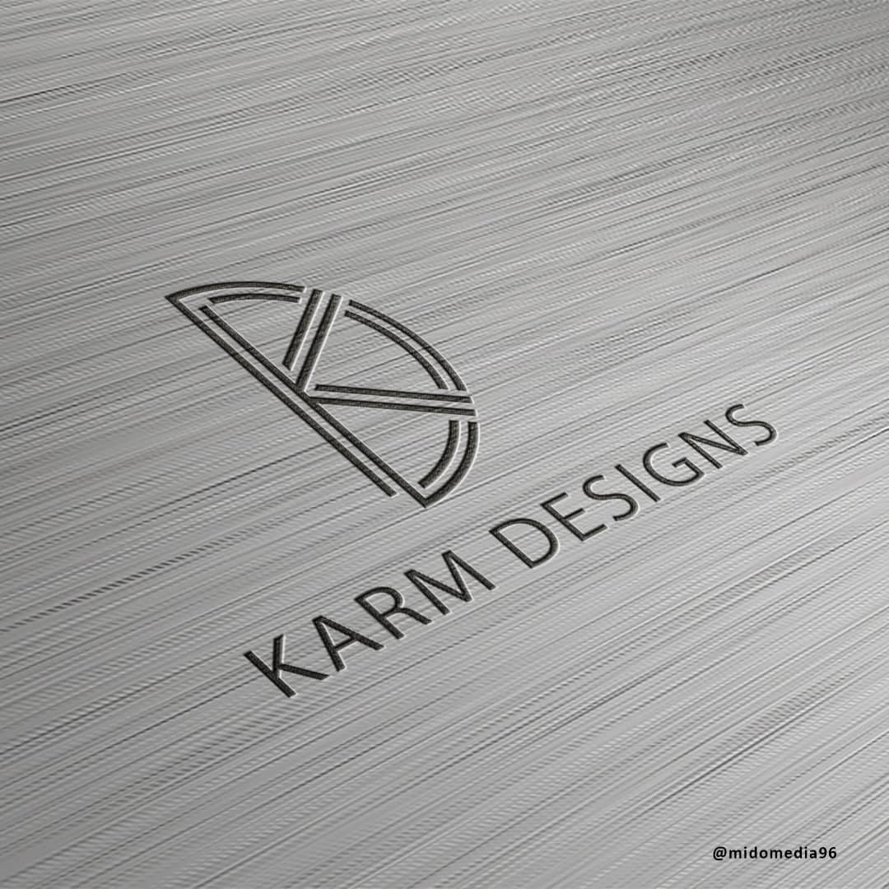

About Me
I’m a junior front-end developer looking for a new role in an exciting company. I focus on writing accessible HTML, using modern CSS practices and writing clean JavaScript. When writing JavaScript code, I mostly use React, but I can adapt to whatever tools are required. I’m based in Benin, NG, but I’m happy working remotely and have experience in remote teams. When I’m not coding, you’ll find me playing games. I love being out in nature whether that’s going for a walk, run or cycling. Lastly, I love women.